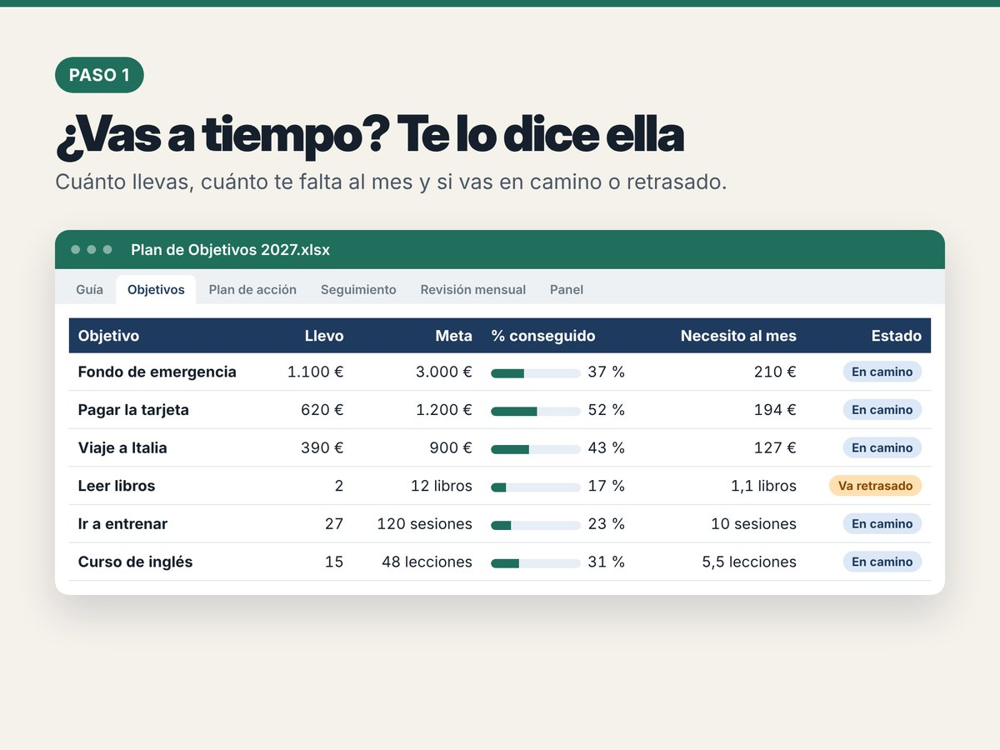
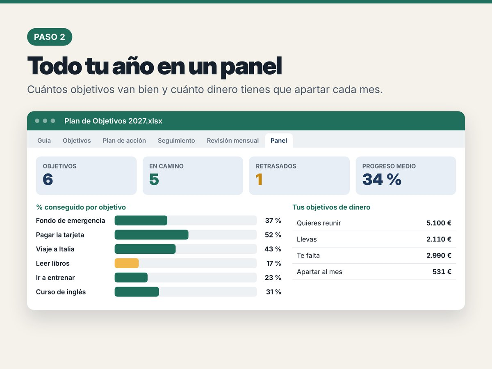
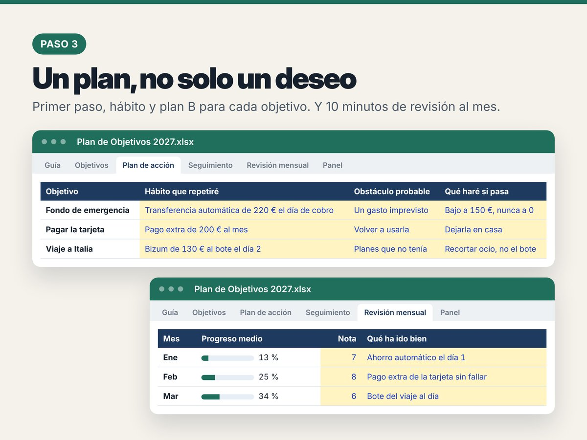

Plan de Objetivos y Propósitos 2027
Pon números a tus propósitos. La plantilla te dice cuánto llevas, cuánto te falta al mes y si vas a tiempo.
Así es por dentro



Qué tiene dentro
| Pestaña | Para qué sirve |
|---|---|
| Guía | Cómo usarla en 5 pasos |
| Objetivos | Hasta 12 objetivos con meta, fecha límite y motivo. Calcula cuánto llevas, cuánto te falta, cuánto necesitas al mes y si vas en camino o retrasado |
| Plan de acción | Primer paso, hábito que repetirás, obstáculo probable, plan B y tu premio |
| Seguimiento | Apuntas lo que avanzas cada mes y la plantilla suma sola |
| Revisión mensual | Tu nota del mes, qué ha ido bien y qué cambias. El progreso medio sale solo |
| Panel | Cuántos objetivos van bien, gráfico de progreso y cuánto dinero apartar al mes para todos tus objetivos de ahorro |
Un ejemplo con números
Quieres un fondo de emergencia de 3.000 € para el 31 de diciembre y ya tienes 400 €. A 31 de marzo has apartado 700 € más: llevas 1.100 €, un 37 %. Te faltan 1.900 € y quedan 275 días, así que la plantilla te dice que necesitas unos 210 € al mes. Como ha pasado el 24 % del plazo y tú vas por delante, el estado sale «En camino».
Para quién es
- Si cada enero te propones ahorrar, pagar deudas o hacer un viaje, y en marzo ya no te acuerdas.
- Si tienes varios objetivos de dinero a la vez y no sabes cuánto apartar para cada uno.
- Si te ayuda ver el progreso en números y no solo en una lista de deseos.
Preguntas frecuentes
¿Sirve para objetivos que no son de dinero?
Sí. Cada objetivo tiene su unidad: euros, libros, sesiones, lecciones… Los que van en euros se suman en el panel para que sepas cuánto apartar al mes en total.
¿Necesito saber Excel?
No. Solo escribes en las celdas amarillas; todo lo demás se calcula solo.
¿Funciona en Google Sheets?
Sí, en Excel, Google Sheets (gratis) y LibreOffice. En el móvil, con la app de Excel o de Google Sheets.
¿Cómo la recibo?
Al pagar te llega el enlace de descarga al momento y también por email.